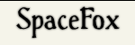

Vous désirez avoir un avatar aléatoire, différent à chaque affichage, comme le mien ? Vous estimez que les dizaines de scripts sur le sujet que l'on trouve sur Internet sont horriblement compliqués pour quelque chose qui a l'air simple ?
Les avatars aléatoires, c'est-à-dire qui affichent une image différente à chaque rafraîchissement (ou selon tout autre paramètre) sont très à la mode, et on trouve énormément de scripts sur Internet qui permettent d'en faire.
Malheureusement, la très grande majorité de ces scripts sont des horreurs finies, des choses de dizaines et dizaines de lignes, avec des variables dans tous les sens, des constantes, etc. À la limite, le problème n'est pas tellement là : on colle le script, il marche, on n'a pas besoin de savoir comment il fonctionne.
Non, le problème est que beaucoup de ces scripts utilisent des fonctions beaucoup trop lourdes pour le serveur par rapport à ce dont on a réellement besoin. On commence avec un petit array(), puis on passe à glob(), et on finit par utiliser l'extension GD pour afficher une image qui se trouve à l'identique sur le disque dur… GD est une librairie très pratique, mais très lourde en calculs pour un serveur. Et comme on va le voir, on n'en a pratiquement jamais besoin.
La solution pour avoir un avatar aléatoire super simple, et super léger pour le serveur, est tellement simple qu'on se demande pourquoi personne ne la choisit : il suffit de renommer ses images. Ou plus exactement de les numéroter. Démonstration.
L'avatar aléatoire aux fichiers à noms « normaux »
L'algorithme de cet avatar est le suivant :
— Lister tous les fichiers du répertoire où il y a les images à afficher.
— Compter le nombre d'items de la liste.
— Choisir un nombre aléatoire, et récupérer le nom du fichier correspondant.
— Afficher le fichier choisi.
Et encore, c'est un cas simple : je pars du principe que toutes les images dont on a besoin sont sagement rangées dans un même dossier, où il n'y a que des images et que celles que l'on veut afficher. De plus, il suffit qu'il y ait un caractère spécial un peu merdique, un fichier parasite qui n'a rien à faire dans le dossier, et hop ! plus rien ne fonctionne correctement. En outre, la recherche des noms de fichiers est un processus lent (il faut faire un accès disque).
L'avantage de cette solution est qu'elle est extrêmement simple à faire fonctionner, une fois que le script est fait : on uploade le script, on uploade les fichiers, ça marche. Si on veut changer les images affichées, on change les images et ça marche tout seul, une fois de plus, et quel que soit le format de l'image.
Solution à images nommées
Ici, toutes nos images que l'on veut afficher s'appellent avatar-1.jpg à avatar-n.jpg, où n est le nombre d'images.
Dans ce cas, l'algorithme devient le suivant :
— Choisir un nombre i entre 1 et n.
— Afficher l'image avatar-i.jpg.
Simple, efficace.
De plus, c'est totalement insensible aux autres fichiers qui pourraient traîner dans le répertoire. L'inconvénient est qu'il faut renommer ses fichiers, et changer le nombre n dans le script à chaque fois qu'on ajoute ou enlève des images à notre avatar.
Afficher l'image choisie
Là encore, on voit beaucoup d'horreurs. La technique la plus répandue consiste à dire que notre fichier PHP renvoie une image (grâce aux headers()), puis à charger l'image dans le fichier pour l'afficher.
On veut afficher une image qui se trouve sur le serveur.
On connaît le nom de cette image.
La solution consiste donc à dire au navigateur : « L'image que tu veux afficher, elle se trouve à cette adresse. » Est-ce qu'il existe une fonction qui nous permet de faire ça ? Oui, toujours notre fameuse fonction headers() !
... et du fond des cieux vint le Script
Maintenant, vous devez être capables de faire votre avatar aléatoire en trois lignes de code, en tout et pour tout. Voici la solution (ici avec 21 images) :
L'image ci-contre fonctionne exactement sous ce principe. Le script PHP est à l'adresse suivante : http://kisai.info/avatar/avatar_renard.php Cliquez sur le lien, ou copiez-collez-le dans une autre fenêtre, et vous verrez dans la barre d'URL l'adresse se muer en la véritable adresse de l'image, tandis qu'un superbe renard s'affichera dans votre navigateur : tout fonctionne.
Ce sont des variables utilisées une seule fois, on peut donc les remplacer directement par leur valeur. Le concept de « variable utilisée une seule fois pour rendre le code plus lisible » peut se comprendre sur un projet de plusieurs centaines de lignes, mais là… non.
Avantages de cette méthode
Le serveur ne fait rien, à part tirer un nombre aléatoire.
On profite du cache du navigateur : si l'on demande l'affichage de avatar-2.jpg et que le navigateur l'a déjà en cache, il n'a pas besoin de la recharger ; alors qu'avec un script sans redirection, il sera toujours obligé de charger l'image.
D'accord, je vois le concept. Mais si je veux faire quelque chose de plus compliqué, avec un traitement sur l'image ?
L'idée de base est de faire le traitement à chaque fois. Sauf que qui dit « traitement », dit en général « librairie GD », donc lourd… C'est là qu'intervient le système de cache !
L'avatar en deux (ou plusieurs) parties
Imaginons que j'aie toute une collection de charmantes demoiselles, dont vous avez un exemple sur votre gauche, et que je veuille en faire mon avatar. Rien de plus simple, je prends la technique indiquée au-dessus.

Sauf que… je veux aussi que mon pseudo apparaisse avec une police classe, en gros, en dessous de mon avatar. Très exactement de la façon dont vous pouvez le voir à droite. Eh bien là, ma méthode ne marche plus ! Il va falloir combiner les deux images, mettre la demoiselle au-dessus du pseudo. Problème : l'image de la demoiselle est aléatoire… Il va donc falloir le faire pour chaque demoiselle. Tout ça sent l'utilisation de PHP GD à plein nez, donc plein de calculs et de difficultés pour votre pauvre serveur.
Combiner les deux images
Mes images de demoiselles font 150 x 150 pixels, le pseudo 150 x 50 pixels, le tout pour une image finale de 150 x 200 pixels. J'ai 72 demoiselles différentes, dans les fichiers haut-1.png à haut-72.png ; et mon pseudo est dans le fichier bas.png.
Si vous connaissez un minimum PHP GD, ça ne pose aucun problème. La variable $haut va nous servir un peu plus loin, c'est sa raison d'être. Le code qui permet de combiner les deux images ressemble donc à ceci :
<?php
// Tirage de l'image aléatoire
$haut = mt_rand(1, 72);
// L'image finale
$iFinale = imagecreatetruecolor(150,200);
// Récupération des images sources
$iHaut = imagecreatefrompng('haut-'.$haut.'.png');
$iBas = imagecreatefrompng('bas.png');
// Collage de l'image haute dans l'image finale
imagecopy($iFinale,
$iHaut,
0, 0,
0, 0,
150, 150);
// Collage de l'image basse dans l'image finale
imagecopy($iFinale,
$iBas,
0, 150,
0, 0,
150, 50);
?>
Il ne me reste plus qu'à afficher l'image $iFinale.
Sauf que… Il n'y a que moi que ça chagrine, de refaire les calculs à chaque fois ? Après tout, on n’a que 72 images possibles, or notre avatar va être affiché bien plus que 72 fois…
Cachez-moi ces images que je ne saurais voir
C'est exactement ça. Et là, deux solutions s'offrent à vous.
Vous faites toutes vos images à la main, et utilisez la première solution. Sauf qu'on est feignants, et qu'on ne veut pas faire d'images à la main.
Vous vérifiez si l'image calculée est disponible. Si oui, on l'affiche. Si non, on la calcule, on l'enregistre, et on l'affiche.
Récapitulons : j'ai toujours mes 72 images de demoiselles, mon pseudo, et j'ai à ma disposition un dossier intelligemment appelé « cache ». De plus, PHP GD dispose d'une fonction qui permet d'enregistrer les images sur le disque dur. Que demande le peuple ? Si on combine tout ça, on obtient un script PHP qui ressemble à ça :
<?php
// Tirage de l'image aléatoire
$haut = mt_rand(1, 72);
// Génération du nom de l'image pré-calculée :
$imgCache = 'cache/h'.$haut.'_b1.jpg';
// Est-ce que mon image existe déjà dans le cache ?
if (!file_exists($imgCache)) {
// Visiblement, non. Alors on la génère :
// L'image finale
$iFinale = imagecreatetruecolor(150,200);
// Récupération des images sources
$iHaut = imagecreatefrompng('haut_'.$haut.'.png');
$iBas = imagecreatefrompng('bas.png');
// Collage de l'image haute dans l'image finale
imagecopy($iFinale,
$iHaut,
0, 0,
0, 0,
150, 150);
// Collage de l'image basse dans l'image finale
imagecopy($iFinale,
$iBas,
0, 150,
0, 0,
150, 50);
// Sauvegarde de l'image
imagejpeg($iFinale, $imgCache, 90);
}
// Maintenant, on est sûrs que notre image existe, donc on peut l'afficher :
header('Location: '.$imgCache);
?>
Le résultat de ce script se trouve à votre droite. Au bout d'un moment, on va se retrouver avec 72 images dans le dossier « cache », de h1_b1.jpg à h72_b1.jpg, il n'y aura alors plus rien à générer, et votre serveur pourra se la couler douce ! Et mieux, si on ajoute une image 73 (et qu'on pense bien à changer le nombre maximum d'images dans le script), elle va se rajouter toute seule à la liste.
Contre-indications
Hélas, la technique du cache ne fonctionne pas avec tous les types d'avatars aléatoires. En fait, je vois deux raisons principales qui empêchent d'utiliser cette technique :
L'avatar trop aléatoire
Votre avatar affiche des informations différentes à chaque fois (typiquement : l'heure, l'IP du visiteur…). Là, vous n'avez pas le choix, vous devez recalculer l'image à chaque fois.
L'avatar produit trop d'images
C'est un simple problème de multiplications. L'image que vous avez à votre droite est un de mes anciens avatars. Il est constitué de :
3 « fonds » différents ;
13 manières d'écrire « SpaceFox » en différentes langues ;
64 demoiselles différentes.
Un petit calcul m'indique donc que dans mon cache, il y avait au bout d'un moment : 3 x 13 x 64 = 2 496 images différentes. Chaque image me prend environ 63 kio, j'ai donc environ 150 Mio de cache pour cet avatar.
Cet avatar est très sympathique, et j'aimerais beaucoup pouvoir l'utiliser ailleurs, sur le Site du Zéro par exemple.
En effet, le site pour lequel j'ai conçu cet avatar accepte des avatars de 150 x 200 pixels, et le Site du Zéro est limité à 100 x 100 pixels. Zut. Voilà qui est bien gênant. Que faire ?
Tu peux redimensionner toutes les images de demoiselles (qui sont déjà carrées), et utiliser la première technique pour le Site du Zéro.
Certes, mais :
Je suis une feignasse, donc je n'ai pas envie de faire plein de redimensionnements à la main.
Si j'ajoute une image, je devrai aussi la redimensionner pour qu'elle apparaisse dans les deux avatars. Et si je veux avoir trois, quatre, cinq avatars avec les mêmes demoiselles ?
Évidemment, il faut utiliser un système de cache ici aussi, pas question de redimensionner « à la volée ». Je vous donne directement le script :
Et voilà comment on obtient deux avatars différents avec un seul set d'images. L'inconvénient de ce genre de méthodes est qu'il faut modifier les deux fichiers PHP à chaque fois qu'on change le nombre d'images. Notez que l'on peut toujours contourner ce « problème » en déclarant le nombre d'images dans une constante dans un fichier de configuration (si j'ose dire), qui sera inclus dans tous les avatars.
Dans config.php :
<?php define('NB_DEMOISELLES', 72); ?>
Puis dans tous les scripts d'avatar :
<?php
require('config.php');
$id = mt_rand(1, NB_DEMOISELLES);
// Suite du code spécifique à chaque avatar...
?>
Ou tout autre système de non-redondance que vous pourriez imaginer. Toutefois, n'oubliez pas que la simplicité est le maître mot de ce tutoriel…
Donc vous avez votre script qui marche impec, testé sur votre serveur, et tout. Vous indiquez l'adresse de votre avatar dans votre forum préféré, et…
Pas de panique ! Il existe deux manières de contourner ce problème !
La manière « barbare » : le paramètre inutile
Elle s'appelle ainsi parce qu'elle n'est ni subtile, ni délicate, mais très simple très efficace. Disons, dans 9 cas sur 10.
Il s'agit de passer un paramètre inutile à votre script, et de lui donner la valeur .jpg, .png ou .gif. Au lieu d'indiquer : exemple.com/avatar.php comme adresse d'image, ce qui ne va pas fonctionner, on passe : exemple.com/avatar.php?inutile=.jpg
Et là, tout le monde est content :
Le système de protection qui va voir une adresse en .jpg, et en déduire que c'est une image valide.
Le script, qui va recevoir un paramètre (ici « inutile » avec la valeur « .jpg ») dont il se fiche totalement, vu qu'il ne le récupère jamais.
Le gros avantage de cette méthode, c'est qu'elle se fait en 10 secondes sans rien toucher sur votre serveur.
La manière « agent double » : le dossier déguisé en fichier
Elle s'appelle ainsi parce qu'elle fonctionne comme un agent double : le dossier se fait passer pour un fichier pour obtenir ce qu'il veut, et c'est très efficace.
Ici, on va se servir de cette propriété intéressante des serveurs web :
Citation : Les règles des serveurs web
Quand on donne l'adresse d'un dossier à un serveur web, il va automatiquement chercher le fichier index.php ou index.html qu'il y a dedans.
Et qu'est-ce qui m'empêche d'appeler mon dossier avatar.jpg ? Eh bien… rien ! On va devoir toucher un peu à la structure de notre avatar. Il faut :
Mettre tous les fichiers (images, script) dans un même dossier que l'on appellera par exemple avatar.jpg.
Renommer le script en index.php.
Puis vous indiquez à votre site l'adresse suivante : exemple.com/avatar.jpg Le site va voir une image, donc va être content et accepter votre avatar. Le serveur, lui, va regarder ce qu'est avatar.jpg et comme c'est un dossier, il va automatiquement appeler : exemple.com/avatar.jpg/index.php ce qui va renvoyer votre image.
L'avantage de cette solution, c'est qu'elle marche sur n'importe quel serveur ; l'inconvénient est qu'elle ne fonctionne plus, ou plus exactement qu'elle nécessite de sérieuses modifications du code, quand on veut faire plusieurs avatars à partir du même set d'images.
La manière « ninja » : le fichier .htaccess
Elle s'appelle ainsi parce qu'elle est subtile, discrète et très, très efficace. En fait, elle ne peut pas échouer.
La première étape, c'est de déclarer qu'on utilise un vrai fichier image, on indique comme adresse quelque chose du genre : exemple.com/avatar.jpg
Sauf qu'on va dire à Apache que ce fichier avatar.jpg n'est pas une image, mais notre fichier avatar.php, et ce grâce aux directives htaccess. Pour ce faire, il faut créer un fichier nommé .htaccess dans le même dossier que votre fichier PHP, qui contient les deux lignes :
RewriteEngine on
RewriteRule ^avatar\.jpg$ avatar.php [L]
En fait, on se sert du module de réécriture d'URL d'Apache (ligne 1), et on lui demande de réécrire avatar.jpg (ce que voit le client) en avatar.php (ce qui va être fait sur le serveur). Je ne détaillerai pas ceci en profondeur, vous pouvez trouver les informations de base sur les fichiers .htaccess ici et trouver les informations sur la réécriture d'URL un peu partout sur Internet.
L'avantage de cette technique est qu'elle est imparable : le client, donc le système de protection, n'a aucun moyen de savoir que vous ne lui passez pas une « vraie » image. Les inconvénients sont que la technique nécessite le ModRewrite activé sur le serveur Apache, et qu'il faut créer le .htaccess en plus.
Les cas pathologiques
Il existe quelques administrateurs paranoïaques, qui ont entendu parler des failles CSRF et qui ont mis en place des techniques un peu violentes pour s'en prémunir. Nous allons voir ici deux de ces techniques, et ce qu'on peut faire face à de tels cas.
Le site télécharge l'image et ne se sert que de la version locale
Tout est dans le titre : quand vous donnez une URL, le site télécharge une copie de l'image, et la stocke sur son propre serveur. L'image que voient les visiteurs est celle stockée sur le serveur.
A priori c'est le cas :
Des avatars sur les forums Xooit.
Les signatures ne semblent pas affectées : je n'ai pas essayé personnellement mais, si j'ai bien compris, la « technique ninja » fonctionne.
Si quelqu'un a plus d'informations, merci de les partager dans les commentaires. De même, si quelqu'un connaît d'autres plates-formes ou sites connus qui fonctionnent de cette manière, signalez-le-moi que je puisse tenir cette liste à jour.
Le site vérifie qu'il n'y a pas de redirection
Et sa variante : le site enregistre l'URL sur laquelle on redirige au lieu de l'URL que l'on donne. Or, tout le fonctionnement repose sur ces fameuses redirections, d'où : problème.
La parade fonctionne donc en deux étapes :
On fournit une vraie image exemple.com/avatar.jpg au formulaire. Le site la vérifie, et enregistre l'URL telle quelle dans sa base, puisqu'il a vérifié qu'il s'agissait bien d'une vraie image.
Une fois l'enregistrement effectué, on supprime notre vraie image exemple.com/avatar.jpg et on se sert de la « technique ninja » pour faire correspondre exemple.com/avatar.jpg à notre fichier .php.
Personnellement je n'ai jamais vu ce genre de cas ; si quelqu'un connaît des plates-formes / sites connus qui fonctionnent de cette manière, merci de me le signaler en commentaire, que je puisse en faire une liste ici.
Voilà, maintenant vous savez à peu près tout ce qu'il y a à savoir sur la création d'avatars aléatoires. En résumé :
il faut utiliser la redirection vers les images ;
on peut calculer des images, mais dans ce cas un système de cache est très intéressant ;
on peut générer plusieurs avatars pour plusieurs sites à partir d'un même set ;
les protections pour obliger à mettre de vraies images sur les sites sont feintables.
Mais surtout, vous savez que si vous prenez la peine de nommer correctement vos fichiers, vous épargnez beaucoup de douleurs à votre serveur, et accessoirement simplifiez vos scripts. Un peu de travail pour vous, beaucoup moins pour votre serveur.
En cadeau pour finir, et parce que vous êtes de bons programmeurs, donc de vraies feignasses qui refusent de nommer plein de fichiers à la main, dans l'ordre et sans se tromper, je vous offre ce logiciel qui le fait pour vous : AntRenamer. Un petit logiciel bien pratique qui permet de numéroter une liste de fichiers, mais aussi de les renommer de plein de manières différentes.
Si vous avez des questions, commentaires, réflexions, etc., n'hésitez pas, les commentaires sont là pour ça !